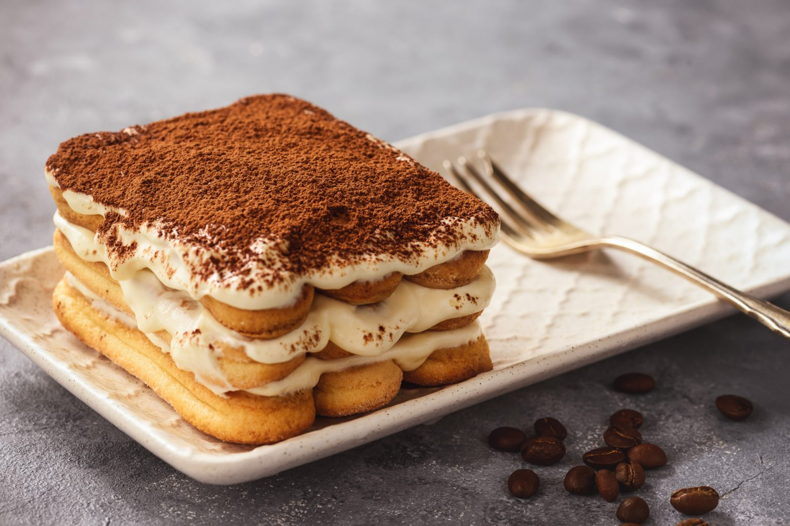

Pizza Margherita
Tomate, mozzarella e manjericão fresco.
12,50 €

Uma pequena viagem até Itália, com pizzas, massas, risottos e sobremesas preparados com paixão.

Na Trattoria Bella Italia celebramos a simplicidade da cozinha italiana: bons ingredientes, receitas cheias de tradição e o prazer de partilhar uma refeição.
Este projeto é uma representação fictícia de uma trattoria italiana, criada para apresentar uma experiência web moderna e elegante.
Conhecer a nossa história →Alguns dos sabores que podes encontrar na nossa ementa.
Tomate, mozzarella e manjericão fresco.

Ovos, pecorino, pancetta e massa al dente.

Mascarpone, café, biscoito e cacau.
Descobre a nossa seleção de gelatos e sobremesas.

Rua da Gastronomia, nº 12
Setúbal, Portugal
Horário fictício
Terça a Domingo • 12:00–15:00 / 19:00–23:00
Telefone: +351 265 000 000
Email: hello@bellaitalia.pt
Para este projeto escolar, os dados de contacto são fictícios.